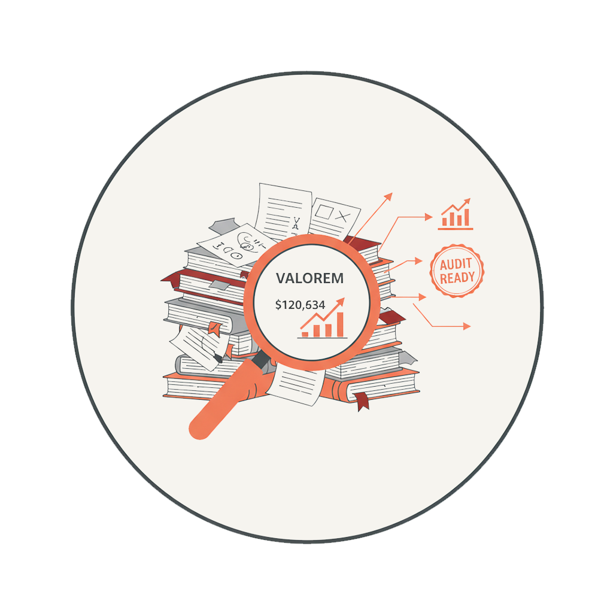

We provide the specialized expertise that startups often lack in-house for financial reporting accuracy, audit-readiness, and ability to withstand investor and board scrutiny.
- We prepare high-growth companies for first-year audits, manage auditor transitions and ensure your financials are compliant and investor-ready
- We bring deep technical expertise, translating complex accounting standards into practical, actionable reporting that stands up to scrutiny from auditors, boards, and investors
- With experience across 200+ successful audits, we provide hands-on support to accelerate timelines, reduce errors, and improve the overall audit experience
- We guide finance teams through ERP implementations and system changes while under the pressure of an active audit, mitigating disruption and maintaining compliance
- We deliver the financial rigor and reporting frameworks needed to support capital market events and strategic exits, from IPOs to private equity transactions
We turn technical complexity into clear, actionable reporting that builds confidence with auditors, investors, and stakeholders.
